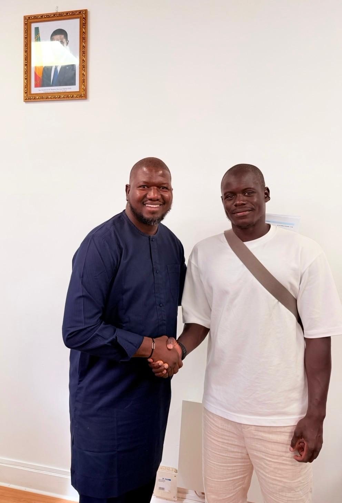

Rejoignez Alternative Citoyenne pour bâtir l'avenir de Thiès-Est !
Partagez vos attentes dans notre Boîte à Idées.
And Sopi Thiès avec Ma Diakhaté Niang.

20 septembre 2026Il y a des convocations qui font particulièrement chaud au cœur. Celle de Malang Sarr, que j’ai eu le plaisir de saluer, en fait partie.
Bienvenue dans la Tanière, Malang ! Je souhaite également la bienvenue au coach Vieira et à tous les joueurs qui rejoignent les Lions pour la première fois. Que cette aventure soit belle pour chacun de vous ! 🇸🇳🦁
P.-S. : J’ai aussi dit à Malang que j’étais heureux qu’il n’ait pas rejoint l’OW. 😄
And Sopi Thiès — Pour une véritable gestion de proximité